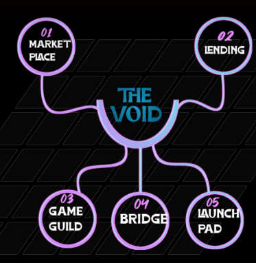

Upscale prospects identified on the KCC Network...
Redesigning the NFT ecosystem through real world applications..
Building an ecosystem that bridges the void between NFTs and the
real world.
Distant Ecosystem

The Distant Timeline
Q2 2022
Project inception and Ideation
Team building and recruitment of project developers
Internal networking with core experts in the NFT and metaverse industry
External Communication with KCC based projects
Partnerships with reputable projects existing on the KCC Network
Q3 2022
The beta phase of the NFT marketplace
Token Presale on reputable platforms
Official Launch
NFT Marketplace Official launch
NFT Minter goes live
Q4 2022
Official beta phase of the Auction House
Fiat integration into the NFT marketplace
Bridge integration and customization
Lending Market beta phase
Public reveal of the Auction House
Q1 2023
DAO Launch and implementation of the veToken model